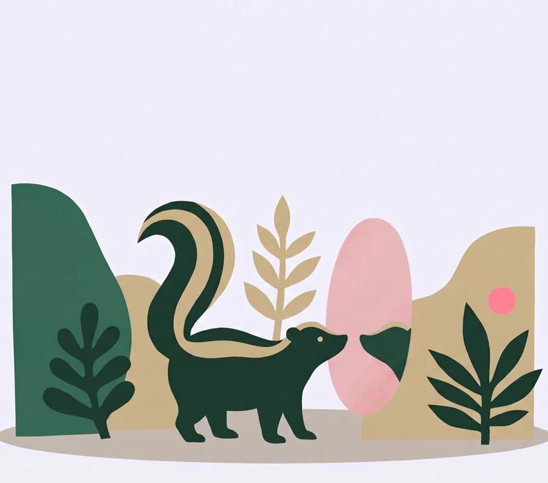
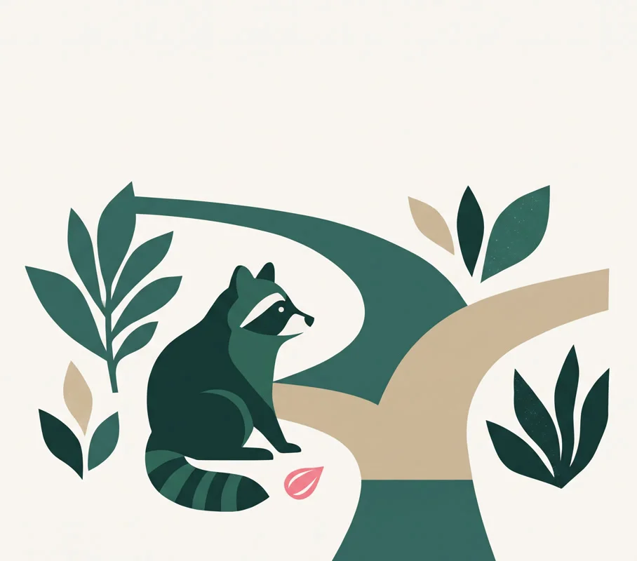
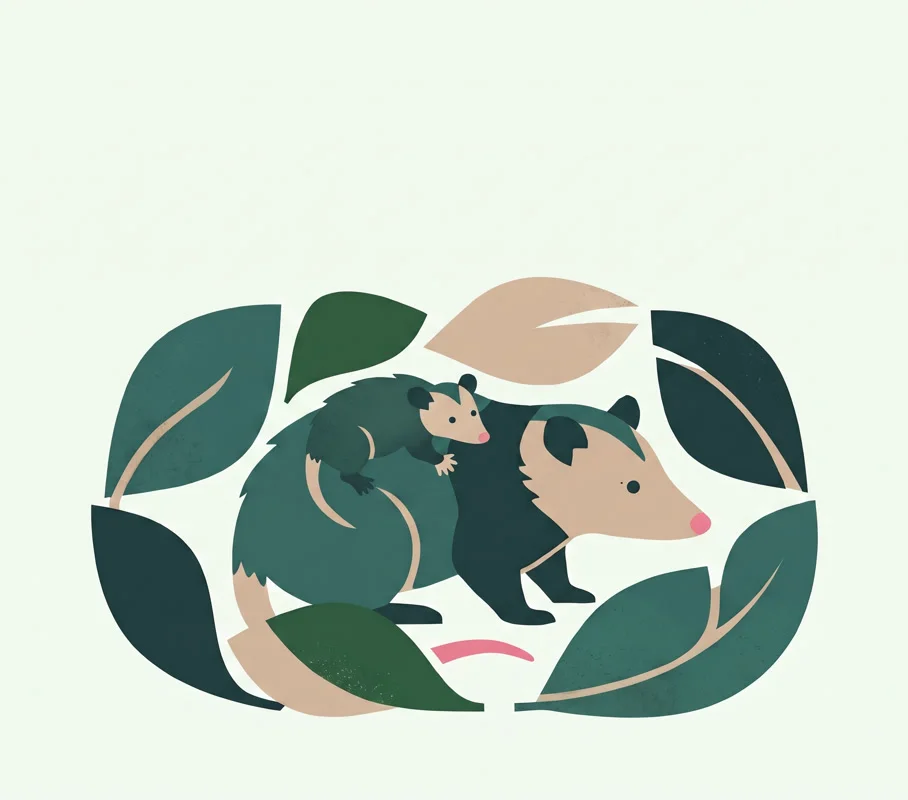
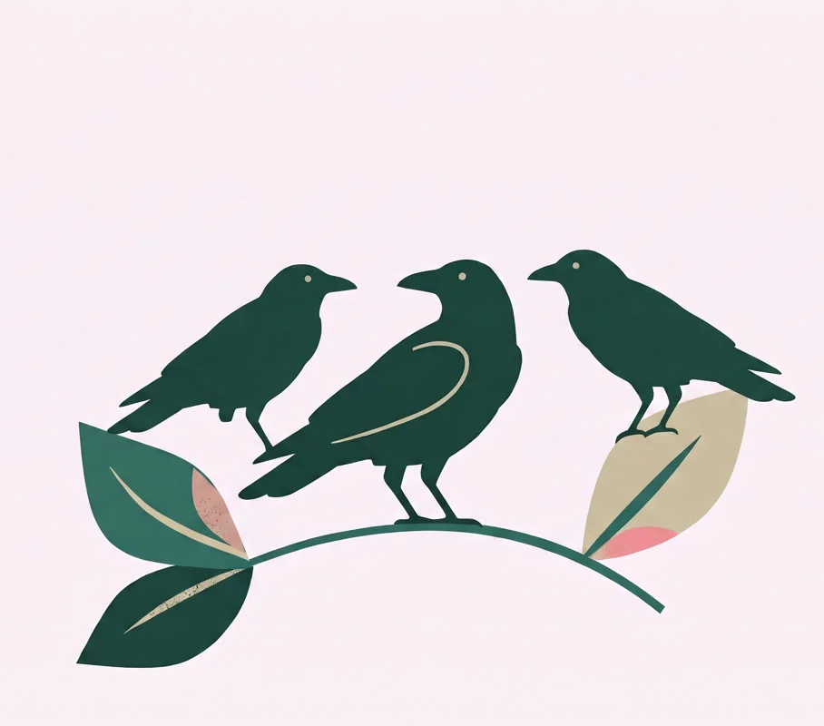
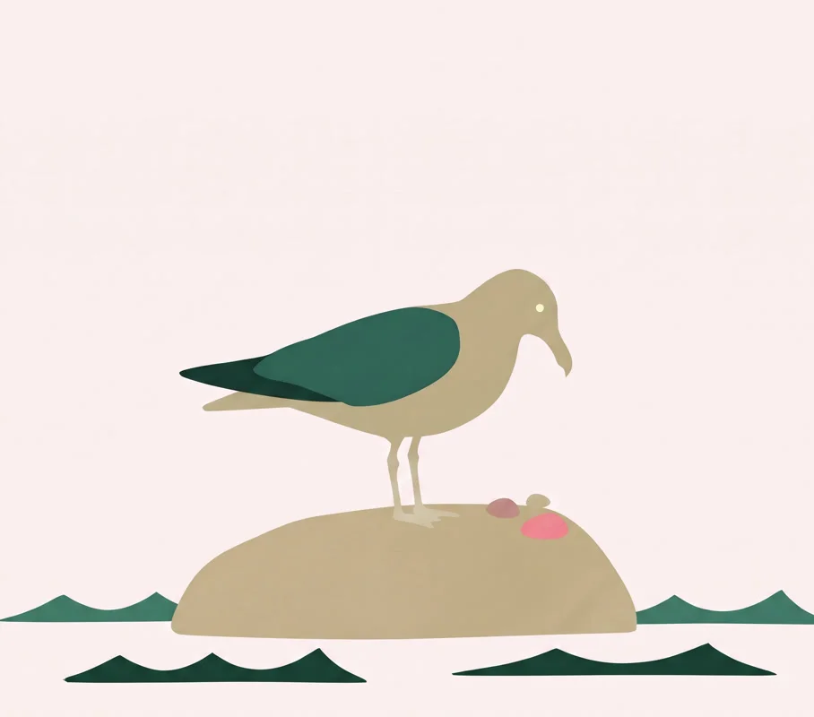

Therapy for teens and adults, at any stage of readiness.
Start Your JourneyMaybe you know what you're searching for, or maybe you're unsure. You are welcome in this space at any stage of readiness. We can embark on this journey together.
Therapy is a radical act. It is a place to make meaning of your experiences, to challenge beliefs that are no longer serving you, and to take steps towards finding peace, joy, and fulfillment. It can be overwhelming to commit to this work—know that you will set the pace and steer the ship. I enter this space with you as a compassionate witness. I believe folks often know what they need but haven't been asked (or asked themselves). Learning to trust your instincts about your needs is a skill we can practice together.
Life is full of complexities. It is not uncommon to develop coping skills to deal with strong emotions, traumatic past experiences, situational stress, and oppressive environments. However, sometimes we face unwanted consequences from our coping skills and are ready to say goodbye to them as we welcome new strategies. Coping skills like substance use, self-harm, and eating-disordered behavior do not develop in a vacuum and may take more than a perspective shift to change. Let's explore tools that help you adapt to your current circumstances without judging anything that has helped you survive.
I want folks to feel comfortable exploring their identities and embodiment in an affirming space. I also believe that everyone is entitled to accessibility and inclusion, and I invite you to share your spectrum of needs for our collaborative partnership. Moreover, our partnership will center you. This means that in the spirit of true eclecticism, we will find the tools that work for you and leave the rest behind. Maybe you've had other experiences with helping partners and found the treatment modalities too rigid. This is a place to write new stories for yourself—let's get creative about how that looks!
On a personal note, I am a mixed-Chicanx nonbinary femme with light skin. I identify as queer, trans, fat, disabled, and neurodivergent. I am also a consumer of mental health services and I approach this work with the goal of sharing power. I want you to feel a sense of agency in everything we do.
In my free time, it brings me joy to be with people and animals. I love watching new shows, listening to audiobooks, and updating an ever-evolving playlist of songs for my life soundtrack. I often feel the desire to make things with my hands, and if I could spend the whole day cross-stitching, I would!




I love connecting with others in the field and encourage you to reach out if you feel my perspective may help you support your clients, students, or employees.

My practice is currently private pay only. I offer superbills you can submit to your insurance company for potential reimbursement. I’m working to accept several major insurance carriers.
Please let me know if you need to cancel or reschedule our session as soon as possible. I will always work with you to reschedule if options are available. I require 24 hours notice to cancel our scheduled session without a fee. Sessions cancelled with less than 24 hours notice (including no-shows) are billed at $100.
I offer telehealth therapy sessions exclusively to residents of Washington state. I utilize Carepatron HIPAA-compliant videoconferencing software to meet online.
Under the law, health care providers need to give clients who don’t have insurance or who are not using insurance an estimate of the expected charges for medical services, including psychotherapy services.
You have the right to receive a Good Faith Estimate for the total expected cost of any non-emergency healthcare services, including psychotherapy services.
You can ask your health care provider, and any other provider you choose, for a Good Faith Estimate before you schedule a service, or at any time during treatment.
If you receive a bill that is at least $400 more than your Good Faith Estimate, you can dispute the bill. Make sure to save a copy or picture of your Good Faith Estimate.
For questions or more information about your right to a Good Faith Estimate, or how to dispute a bill, see your Estimate, or visit www.cms.gov/nosurprises.